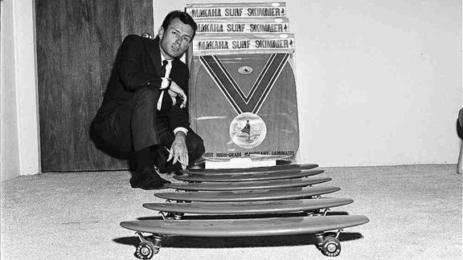

História

Skate é um esporte radical muito praticado atualmente.
Consiste em, realizar manobras deslizando sobre o solo
(com ou sem obstáculos) equilibrando-se sobre o skate.
O skate é uma prancha (shape) que possui dois eixos
(trucks), rolamentos e quatro pequenas rodas.
O skate surgiu na Califórnia, Estados Unidos, nos anos 60.
Foi inventado por alguns surfistas, como uma brincadeira
para um dia qual não havia ondas no mar. Eles utilizaram
rodinhas de patins.
O skate surgiu na Califórnia, Estados Unidos, nos anos 60. Foi inventado por alguns surfistas,
como uma brincadeira para um dia no qual não havia ondas no mar. Eles utilizaram rodinhas de patins.
Já em 1965 foram fabricados os primeiros skates e realizados os primeiros campeonatos.
Mas o esporte só ganhou o mundo nos anos 90,
quando o norte-americano Tony Hawk realizou uma revolução com seus aéreos e flips.
Tony Hawk é considerado, até hoje, o maior skatista de todos os tempos.
O skate é praticado pelas ruas do mundo todo, ou em ligares específicos, como os skate parks.
É essencial a utilização de equipamentos de segurança como o capacete,
joelheira e cotoveleira para o mínimo de proteção em caso de quedas.
Existem as seguintes modalidades para a prática do skate:
Freestyle – manobras feitas em sequência, no chão.
Down Hill – descida de ladeiras na maior velocidade possível.
Downhill Slide – descida de ladeiras em alta velocidade, realizando manobras de derrapagem.
Vertical - é praticada em pista, e pode ser subdividida em outras modalidades,
variando sempre as condições da pista. As manobras podem ser aéreas ou deslizando pela borda metálica da pista.
Street Style (skate de rua) – na modalidade mais praticada em todo o mundo, os bancos, corrimões,
escadas das ruas das cidades são utilizadas como obstáculos para o skate.
Mini-rampas – práticado em rampa que mistura os estilo Street e Vertical (paredes pouco inclinadas).
Nas competições, só existem duas categorias: a Street (circuito com obstáculos) e a Half Pipe (rampa em formato de “U”).
As manobras são avaliadas por juizes que atribuem notas considerando a dificuldade e a desenvoltura das manobras realizadas.
Desenvolvido por:
@henr1quef